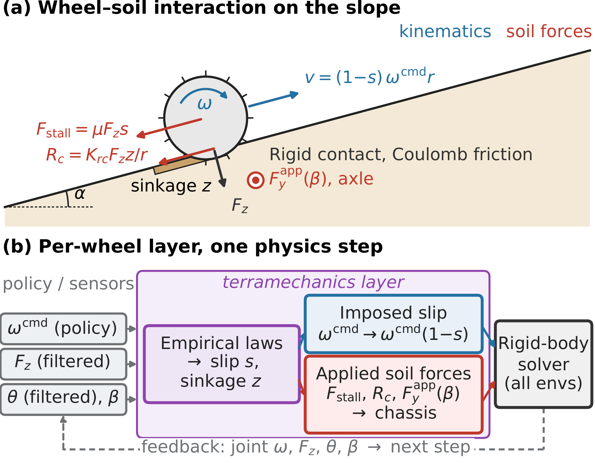
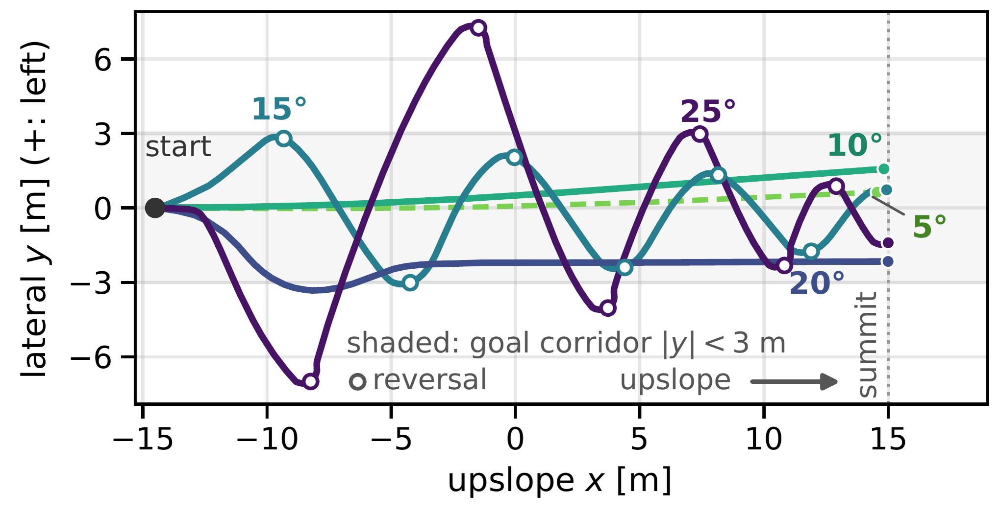

Abstract
On soft, steep slopes, a wheeled robot's path determines how much it slips: heading across the slope lowers the effective slope its wheels climb but lengthens the path. Path and traction are therefore coupled, yet conventional planners and controllers separate the two. Reinforcement learning (RL) could learn both, but state-of-the-art parallel (GPU) simulators treat the ground as rigid, because soil models that capture slip are too costly at that scale. We develop a simple terramechanics layer that extends empirical slip and sinkage laws to each wheel's oblique and turning motion. Its closed-form, per-wheel design enables GPU-parallel RL on soft soil. With no path or slip term in the reward, policies trained under lunar gravity climb straight on gentle slopes, while switchbacks emerge on the 15° and 25° slopes; rigid-ground training with the same reward produces no switchbacks. At 15°, for example, the switchback reduces slip by lowering the effective slope to about 11°, near the slip law's optimum, and reaches the top 1.38 times faster than a straight climb. We confirm the layer's sinkage trend and the switchback's reversals in a higher-fidelity continuum soil simulation.
A terramechanics layer inside every environment
Parallel GPU simulators treat the ground as rigid, because soil models that capture slip are too costly at that scale. The layer adds slip, sinkage and soil forces per wheel, on top of the simulator's rigid contact.

Slip and sinkage per wheel
Empirical slip and sinkage laws from prior work, fitted to straight driving runs, single-wheel testbed data and discrete element method simulations, are evaluated for each wheel along its rolling direction, and the layer applies the resulting soil forces. The compaction-resistance gain and the lateral-force term are set from MPM simulations.
GPU-parallel, lunar gravity
512 environments run under 1.62 m/s² and train at 37–136 times real time with the layer active (simulated time summed over the environments).
One reward, no prescribed path
One PPO policy is trained per slope with the same reward. Its only dense term rewards velocity toward the center of the summit line; sparse terms reward crossing the line, arriving inside the goal corridor and facing forward on arrival, and penalize tilt and heading failures, with small regularizing penalties. No term covers the path, the attack angle or slip, so the path in between is left to the policy.
The policy chooses its path by slope
Each clip is the nominal run of the policy adopted for that slope: one deterministic episode from the fixed start pose. Left: top view with the driven path. Right: follow camera.
Straight climb
On a gentle slope the policy drives straight up.
Straight climb
The policy still drives straight up.
Switchback
The policy turns across the slope and reverses its heading six times on the way up.
One oblique segment
The rover drives one oblique segment, up to 48.7° off upslope, and then climbs straight without reversing.
Switchback
On the steepest slope the policy again reverses its heading six times, on wider segments than at 15°.
Goal: the rover reached the goal corridor in 128 of 128 held-out randomized episodes (95% CI 97.2–100%). Time: mean over those episodes. Reversals: counted in the nominal run shown here; a reversal is counted when the heading changes sign between two consecutive excursions that each peak above 30°. Clips show the policy adopted for each slope; whether training finds a switchback depends on the seed.
Five slopes, three kinds of path

Comparison on the 15° slope
The same slope with a scripted straight-line controller and with the policy trained on rigid ground. All clips play at the same speed.
Climbs in switchbacks.
Drives straight up the slope.
Trained with the same reward but without the layer, the adopted policy climbs straight.
The same policy in the soft-soil simulation, without retraining.
| Controller | Episodes | Mean time |
|---|---|---|
| Soft-soil policy (trained with the layer) | 128 | 101.9 s |
| Rigid-ground policy, moved to the soft-soil simulation | 64 | 146.8 s |
| Straight-line controller | 64 | 140.7 s |
| PID controller | 64 | 140.9 s |
| 15° attack-angle controller | 64 | 134.9 s |
| Scripted switchback, tuned for this slope | 64 | 95.1 s |
With the soft-soil policy the rover reaches the summit line 1.38 times faster than with the straight-line and PID controllers and 1.32 times faster than with the 15° attack-angle controller, which ends outside the goal corridor. A scripted switchback tuned for this slope is faster than the soft-soil policy.
Check in a higher-fidelity continuum soil simulation
A continuum soil simulation based on the material point method (MPM) tests the layer and the learned commands. The slip and sinkage laws were fitted without MPM, so MPM tests them independently; the compaction-resistance gain and the lateral-force term were set from MPM, so for them the comparison is only a consistency check.
The realized wheel speeds and steering targets of the 15° switchback are played back on MPM soil without feedback. In 13 runs covering five of the six reversals, the rover reversed its heading every time.
A grousered wheel driven at a forced slip ratio. In these runs sinkage increases with slip, as the layer assumes.
In the MPM replay, a reversal is the first sign change of the heading after it exceeds 5°. In straight-drive MPM tests the layer predicts more slip than MPM from 10° upward; the paper gives the numbers.